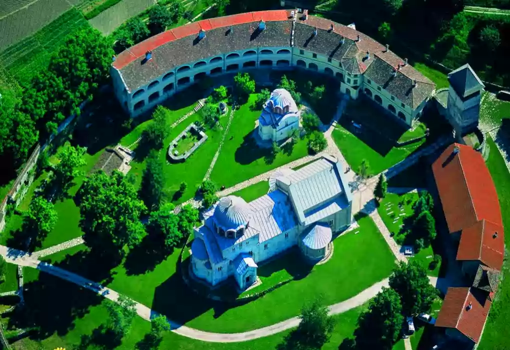

SRBIJA
Nedaleko od živopisne klisure reke Ibar, na desnoj obali reke Studenice, opasana visokim zaštitnim zidom, uzdiže se manastir Studenica, zadužbina
velikog župana Stefana Nemanje, utemeljivača nezavisne srpske države i rodonačelnika dinastije koja će vladati Srbijom puna dva veka.

Predstavlja najznačajniji manastirski kompleks srednjovekovne Srbije i veliki duhovni i umetnički centar srpskog naroda. Za nešto više od jedne
decenije, od 1183. do 1196. uobličena je najlepša građevina srpske srednjovekovne arhitekture. Od 12. veka kada je osnovana monaška zajednica,
Studenica ni u jednom trenutku nije prekidala svoj viševekovni život. Kao zadužbina i grobnica rodonačelnika dinastije Nemanjić Studenica je služila
kao uzor mnogim vladarima ove loze za podizanje mauzoleja koji bi nalikovali Bogorodičinoj crkvi.
Bogorodičina crkva se ubraja u najznačajnije spomenike raške graditeljske škole. Crkva je jednobrodna građevina, ima naos, trodelni oltarski prostor
i pripratu zidom odvojenu od naosa. Nad centralnim delom uzdiže se kupola sa srazmerno niskim tamburom. Osim kupole i spoljne priprate, spoljni zidovi
su oplaćeni belim mermerom, a prozori i portali ukrašeni plastikom visokih stilskih vrednosti. Originalni spoj vizantijskog prostora i strukture hrama
i spoljnih oblika i njihove obrade u belom mermeru, koje potiču iz romanske arhitekture čine Studenicu remek delom srednjoevropske arhitekture.
Freske, remek-dela vizantijskog živopisa sa početka 13. veka, obeležile su put srpskog srednjovekovnog slikarstva. U riznici se čuvaju neki od kapitalnih
primeraka srpske primenjene umetnosti, kao što su prsten Stefana Nemanje, predmeti od metala, plaštanice, povelje i druge relikvije.
Posebno mesto u kompleksu manastira Studenica zauzima Kraljeva crkva, zadužbina kralja Milutina iz 1314. godine, sa zidnim slikarstvom izuzetne
prefinjenosti. Građena je u obliku sažetog krsta sa kubetom koje je spolja osmostrano, a unutra okruglo. Ono predstavlja vrhunac stvaralaštva dvorskih
slikara Mihaila i Evtihija i svakako jednu od najlepših fresko celina u srpskoj srednjovekovnoj umetnosti. Besprekorno komponovane scene iz
Bogorodičinog života 1569. doživele su veliku obnovu koju je izvršio Longin, najveći srpski slikar 16. veka.
Sa svojim hramovima, trpezarijama, kulama i konacima Studenica je zadržala svoju prvobitnu funkciju, a kao prvorazredni zakonom zaštićeni spomenik
upisan je u Listu svetske kulturne baštine UNESCO-a od 1986. Manatir Studenica nalazi se na Putu kulture Transromanika.